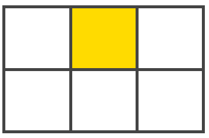

Front-end developer @ ING

Front-end developer @ ING
What trainings have you followed in your 'Open Program'?
Hello world, we speak Internet!
Hello world, we speak Internet!
Hello world, we speak Internet!
Hello world, we speak Internet!
CSS conf
CSS grid

Grid VS Flex

Example
Header
Content
Browser support?
CSS @supports rule
@supports (display: grid) {
div {
display: grid;
}
}
div {
display: flex;
}
But ...
Accessible by Law!

@daginge

@idaaa
Accessibility?
WCAG 2.0 level AA
Contrast ratio > 4.5
Contrast ratio?
Relative luminance: 0 -> 1
Example
Is this readable?
Contrast ratio:
“Accessibility is never finished”
Intermission
JS conf
Async under the hood

@codebytere
Run to completion
Beginning
End
Promises
const prom = Promise.resolve('hello');
prom.then((val) => {
console.log(val);
return `${val} world!`
}).then((val) => {
console.log(val);
})
Async/Await
async function getAddress() {
const streetAddress = await getStreetAddress();
const city = await getCity();
const postal = await getPostalCode();
return `${streetAddress}, ${postal} ${city}`;
}
Awaits execute synchronously??
Await + Promises!
async function getAddress() {
let [
streetAddress,
city,
postal
] = await Promise.all([
getStreetAddress(),
getCity(),
getPostalCode()
]);
return `${streetAddress}, ${postal} ${city}`;
}
Aggressive Web Apps

@philnash
Push notifications in the web
Examples of good notifications
Timely, Actionable and Personal
Timely
Time of day
Time zone
Number of notifications
Actionable
Personal
Bob sent you a message
You can check in to your flight now
Your pizza has arrived
Where do things go Wrong?

Phil's summary
Don't ask notification permissions on page load
Allow users to opt out
If users block all notifications, the whole web suffers
Why conferences?
Thanks Exellys!
Networking !important
Presentation1 !== Presentation2
training && conference
I
T
I T
Which suits you the best on this moment?
Take-aways
New trends and technologies
Check out our future blogpost
Consider a conference visit together with TDM
But also:
ENJOY !